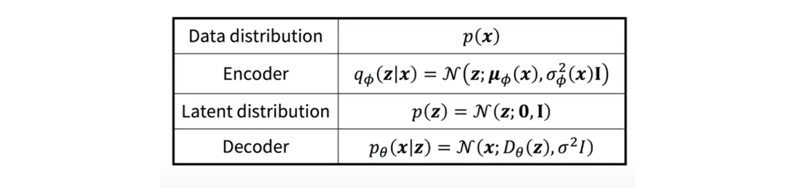
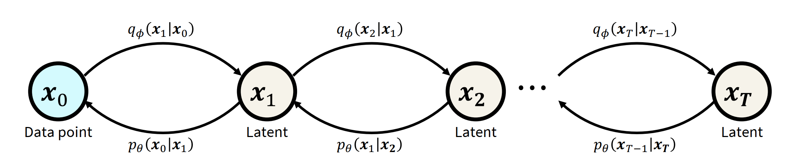

Generative Models Before Diffusion#
The goal of generative models is to synthesize new data samples from an underlying data distribution, typically defined through a set of training examples. From a statistical standpoint, if a probability density function (PDF) describes the data, then new samples can be drawn by sampling from this distribution. This is often done by converting the PDF to a cumulative distribution function (CDF), sampling a point uniformly from \([0, 1]\), and mapping it through the inverse CDF.
Thus, the essence of generative modeling is to learn a probability distribution \(p(x)\) that best represents a given dataset \({x_1, x_2, \ldots, x_n}\). A common strategy is to assume a simple prior distribution \(p(z)\), such as a standard Gaussian \(\mathcal{N}(0, I)\), and learn a mapping between \(p(z)\) and \(p(x)\). This mapping is typically modeled using neural networks, as in autoencoders, GANs, VAEs, flow models, or diffusion models.
Auto-Encoders#
Autoencoders provide a simple way to compress complex data into a lower-dimensional latent space. However, they do not enforce any structure on this space. As a result, not all latent points correspond to valid data samples, making the latent space sparse and hard to navigate.
Generative Adversarial Networks#
GANs were motivated by the concept of adversarial perturbations that can fool classifiers. A GAN consists of a generator \(G\) and a discriminator \(D\) trained simultaneously. The generator learns to create data that can fool the discriminator, which in turn learns to distinguish between real and generated data. The training objective is:
There are challenges in training GANs:
Mode collapse: the generator captures only a subset of the data distribution.
Training Instability: if the discriminator becomes too strong and can easily differentiate between real and fake examples, the generator receives negligible gradients and the training becomes very slow.
Likelihood-Based Generative Models#
Can a generative model be trained without solving a minimax problem?
Let the mapping from latent variable \(z\) to data \(x\) be represented as \(p(x|z)\). The marginal likelihood of data can be expressed as:
or using Bayes’ theorem:
However, directly maximizing \(p(x)\) is computationally difficult due to:
High-dimensional integration (e.g., using Monte Carlo methods): integrating over complex distributions using methods, such as Monte Carlo, is very expensive for high-dimensional data.
Unknown posterior \(p(z|x)\): Or it requires access to the latent encoder distribution \(p(z|x)\), which is not known.
Hence, the underlying question is “How can one maximize the marginal probability \(p(x)\), given example data \(x\)?”.
Evidence Lower Bound (ELBO)#
To address this, a variational approximation \(q_\phi(z|x)\) to the posterior \(p(z|x)\) is introduced and a tractable lower bound is drived:
Where \(q_\phi\) is a proxy distribution.
Using Jensen’s inequality (for any convex function \(f\), \(f(\mathbb{E}_{p_{(x)}}[x]\leq \mathbb{E}_{p_{(x)}}[f(x)]\):
Also, equivalently:
Since KL divergence is non-negative, ELBO is a valid lower bound. Maximizing ELBO is thus equivalent to minimizing the KL divergence between \(q_\phi(z|x)\) and \(p(z|x)\).
Evidence Lower Bound (ELBO):
Variational Autoencoders#
In VAEs, the ELBO is directly maximized using variational inference. The variational posterior \(q_\phi(z|x)\) and decoder \(p_\theta(x|z)\) are parameterized by neural networks and the parameters \(\phi\) of the distribution \(q_\phi(z|x)\) are optimized for the best distribution among a family of distributions.
For VAE, the ELBO (Evidence Lower Bound) can be decomposed further as follows:
In VAEs, an intermediate bottleneck distribution \(q_\phi(z|x)\) is defined — this acts as the encoder, transforming inputs into a distribution over possible latents. A deterministic decoder function \(p_\theta(x|z)\) is then learned to map a latent vector \(z\) into a reconstructed observation \(x\).
The parameters, \(\theta\) and \(\phi\), are optimized jointly to maximize the ELBO. A common choice for the encoder is a multivariate Gaussian with diagonal covariance and a standard Gaussian for the prior \(p(z)\).
In summary,
From input x, encoder predicts \(\mu_\phi(x), \sigma^2_\phi(x)\)
The decoder takes a sample \(z\sim N(z;\mu_\phi(x), \sigma_\phi^2(x)I\), which can be seen as a reprametrization of the standard normal distribution. 
For training, maximize ELBO:
The KL divergence term can be computed analytically and the reconstruction term can be approximated using Monte Carlo estimate:
Sample a latent variable \(z \sim q_\phi(z|x) = \mathcal{N}(z;\mu_\phi(x), \sigma_\phi^2(x) \mathbf{I})\), using the reparameterization: \(z = \mu_\phi(x) + \sigma_\phi(x) \cdot \epsilon, \quad \epsilon \sim \mathcal{N}(0, \mathbf{I})\). The reparametrization provides a link between encoder and decoder where the samples are not just samples from standard normal distribution but samples are reparametrized according to the mean and variance predicted from the encoder. Using \(p_\theta(x|z) = \mathcal{N}(x;D_\theta(z), \sigma^2 \mathbf{I})\),
Here \(D_\theta(z)\) is the reconstructed \(\hat{x}\), and \(d\) is the data dimension. The term \(\log \; \sqrt{(2\pi \sigma^2)^d}\) is constant. So, only the reconstruction term \(||x-D_\theta(z)||^2\) contributes.
So, the training steps are as follows:
Feed a data point \(x\) to the encoder to predict \(\mu_\phi(x)\) and \(\sigma_\phi^2(x)\).
Sample a latent variable \(z\) from \(q_\phi(z|x) = N(z;\mu_\phi(x), \sigma_\phi^2(x)I\).
Feed \(z\) to the decoder to predict \(\hat{x} = D_\theta(z)\).
Compute the gradient decent through the negative ELBO.
The above sampling for training is differentiable as \(z=\mu_\phi(x)+ \sigma_\phi(x) \epsilon\), where \(\epsilon \sim N(0,I)\). For generation,
Sample a latent variable \(z\) from \(p(z) = N(z; 0, I)\).
Feed z to the decoder to predict \(\hat{x} = D_\theta (z)\).
There are several limitations of VAEs.
In place of \(\log \; p(x)\), ELBO is maximized. Hence, there is gap between the two. The lower bound is tight when \(q_\phi(z|x)\) is identical to the true posterior distribution \(p(z|x)\).
Using standard normal distribution as a posterior distribution \(p(z|x)\) might not be sufficient to model complex distributions.
Hierarchical VAEs#
Is there exists a better method for approximating the posterior distribution in a variational way?
One of the ways is to use Hierarchical VAEs. The idea is to have a sequence of latent variables where a Markovian process is considered between two latent variables.

For this Markovian process, join distribution is given by:
The variational posterior is given as:
While each \(q_\phi(x_{t+1}|x_{t})\) is a normal distribution, \(q_\phi(x_T|x_{0})\) can be a more complex distribution. A similar expression for ELBO can be derived for hierarchical case as well.